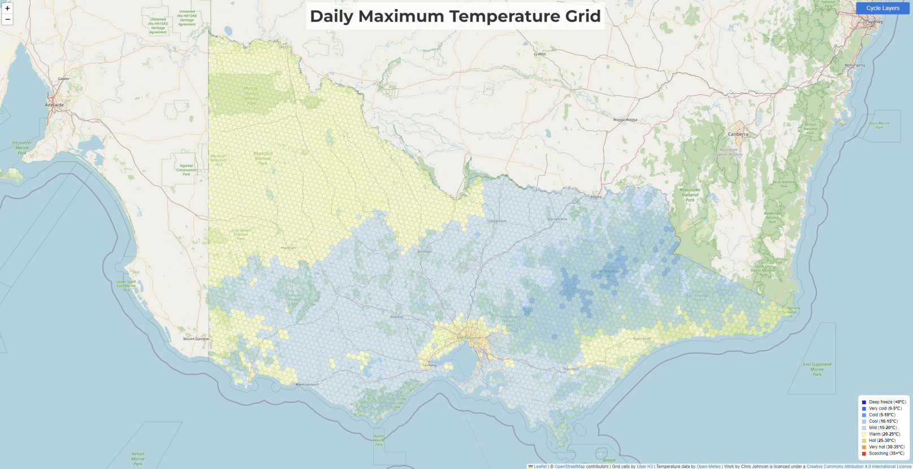
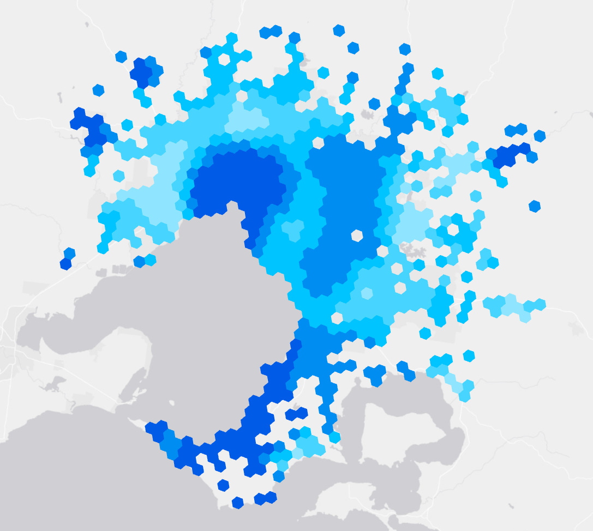
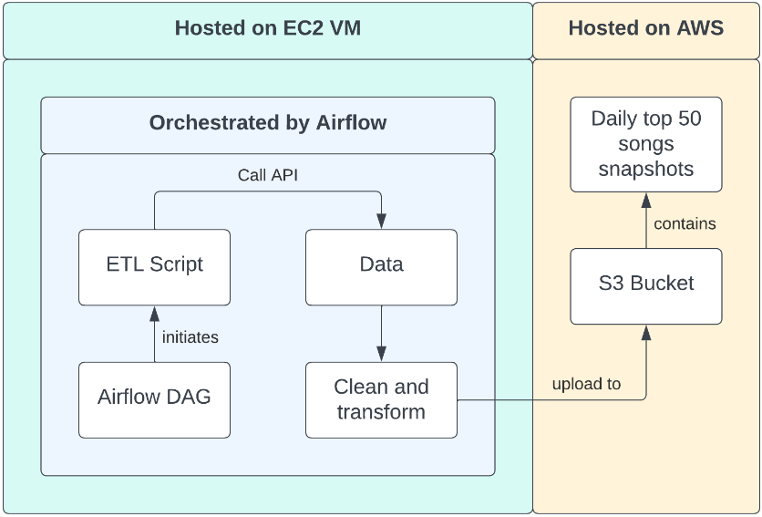

Geoportfolio
Christopher Johnson
About
This website is the geoportfolio of Christopher Johnson which was made for the subject Professional Practice. The website entails
information that is academically and profesionally related to the field of geospatial science.
My name is Chris and I am a dedicated data professional with a rich academic background in Geospatial Science and hands-on experience in
data science, analysis, and pipeline development. I have Demonstrated expertise in leveraging Python for machine learning,
data engineering, and automation, combined with in-depth knowledge of cloud platforms such as AWS and Azure.
I am Proficient in SQL, database management, and advanced GIS tools, underpinned by a solid foundation in data-driven
decision-making from diverse sources. I Possesses a keen eye for detail and a passion for deriving meaningful insights
from complex data landscapes. I am always Eager to bring a fusion of geospatial expertise and data science skills to any challenge.
My own personal hobbies include jogging and travelling! More detailed information can be found in the About page!
Academic Portfolio Overview
Project 1: Cloud-Based Visualization of Live Weather Data
Implemented a cloud-based solution for live visualization of weather data across Victoria, using a hexagonal
grid system to represent spatial trends. The project involved data collection, database management, automation,
server setup, web development, and cloud computing.
- Practical 2: Map directed at a target audience of choice using provided data of Melbourne City
- Practical 3: Thematic mapping of a demographic's population using data from the Australian Bureau of Statistics (ABS)
- Final Cartography Map: Free-choice on topic
Full Documentation

Project 2: Predictive Crash Modelling
Conducting an in-depth research project to model and predict crash severity and density in the Greater Melbourne region,
Victoria. Leveraging advanced techniques such as random forest algorithms and autoencoding for embedding road networks.
Using the H3 Python library to aggregate data into cells for spatial analysis. Extensive use of Python and Pandas for
data processing and analysis. Demonstrating the entire Data Science process from data collection to advanced model
evaluation statistics.

Project 3: Spotify ETL Pipeline
Developed an automated and scalable ETL pipeline that extracted daily data from Spotify's 'Top 50 Tracks' playlist,
transformed the data using Python and Pandas, and loaded it into an AWS S3 bucket. Utilized Apache Airflow for scheduling
and monitoring the workflow, implemented secure access to S3 buckets using AWS IAM, and set up an EC2 instance for running
the Airflow server. Successfully automated the ETL process, providing a daily updated snapshot of music trends. This project
showcased proficiency in automating data workflows, managing cloud resources, and interacting with APIs.
Full Documentation

Industry Experience
This page will briefly cover all my work experience (as of September 2023) within the geospatial science industry. The two main companies that I have worked at
were Place Intelligence and M.J Reddie Surveys. This page will outline my experience gained and skills I have learned from working at these companies.
Place Intelligence
Data Analyst
November 2022 - June 2023
Leveraging ArcGIS & QGIS to design and construct Australia wide geospatial datasets for a variety of applications
Employing GIS tools to conduct spatial analyses and provide insight on urban traffic data
Implementing Python within the QGIS environment to automate processes and enhance productivity
Responsible for collecting data from a variety of sources such as databases and APIs
Worked as a team on projects, signifying the importance of good team communication
M.J Reddie Surveys
Surveying Assistant
December 2021 - July 2022
Engaged in feature and re-establishment surveys as part of a dynamic team, demonstrating cooperative skills
Operated sophisticated surveying equipment such as total stations and GPS, highlighting technical acumen
Maintained a keen emphasis on accuracy and diligence, ensuring measurements were precise and reliable
Performed on-site calculations and sketching, illustrating an aptitude for real-time problem-solving and data interpretation
Skills and Proficiencies
 |
Machine Learning |
 |
QGIS |
 |
Python |
 |
Web Design |
 |
Data Engineering |
 |
SQL |
Credits and Attributions
The following programming languages and software were used to create the website
- HTML
- CSS
- JavaScript
- Visual Studio Basic
Special thanks to the following people who have helped me make this website with their expertise and guidance:
As per the policy of using the Flaticons with a free account, the attributions and crediting of the creators of the icons are as below:
Attributions of icons used: